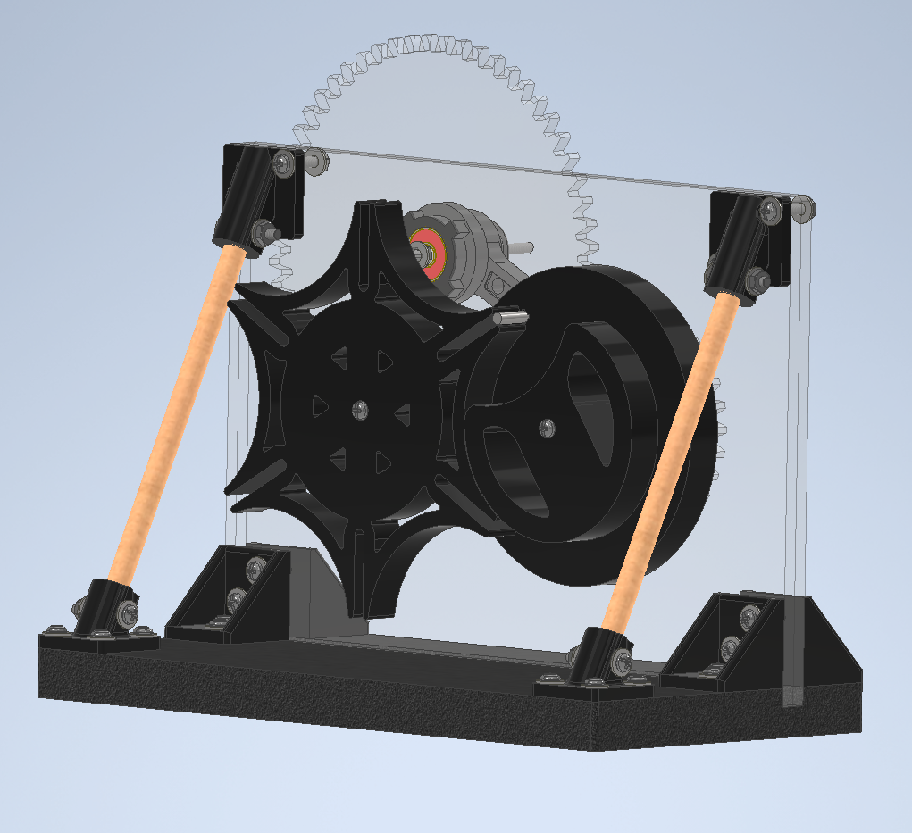
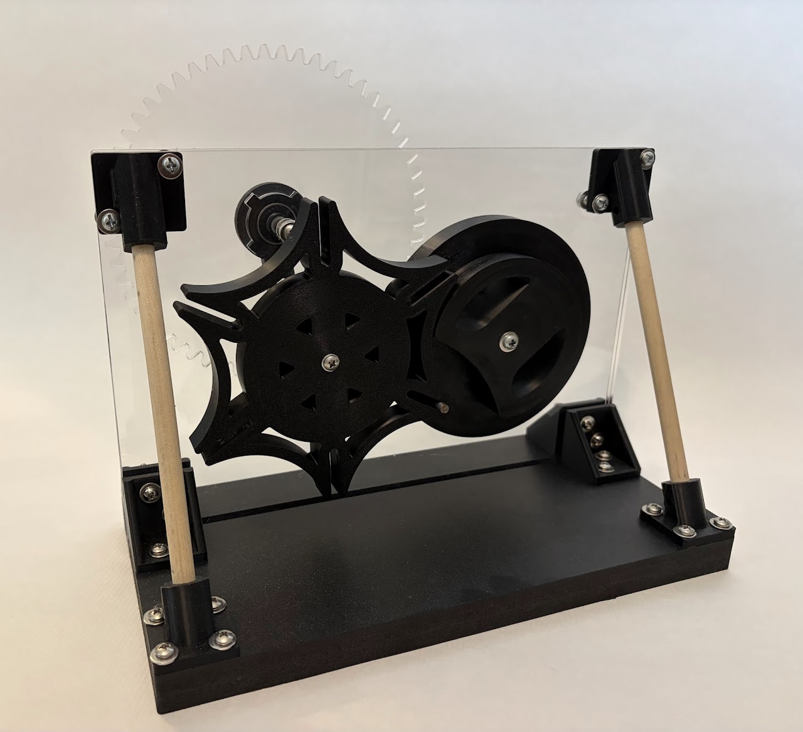
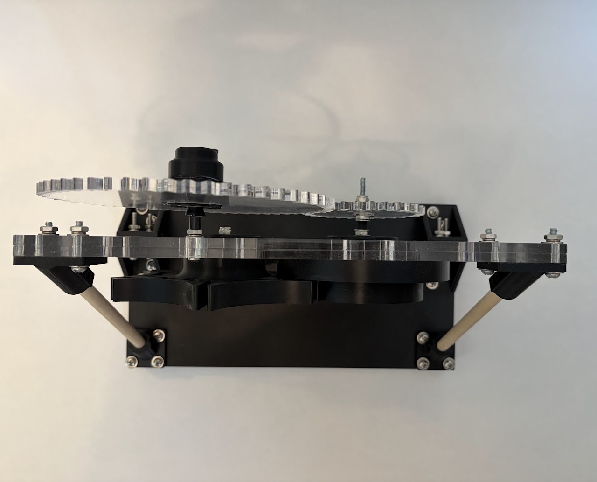
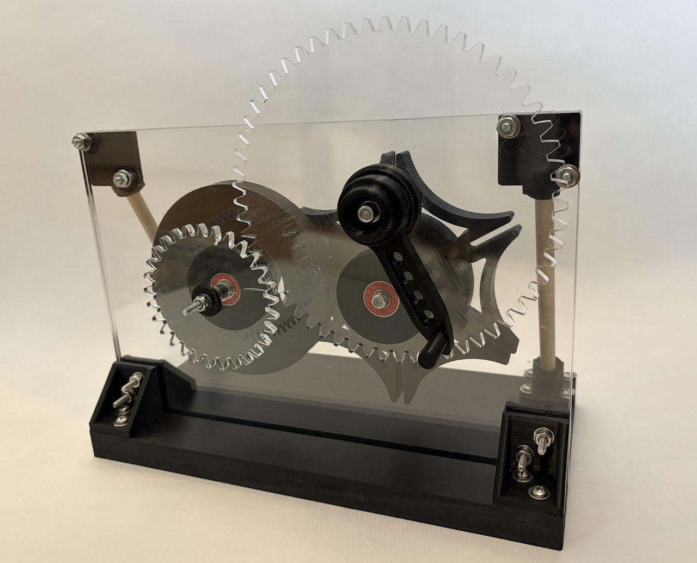
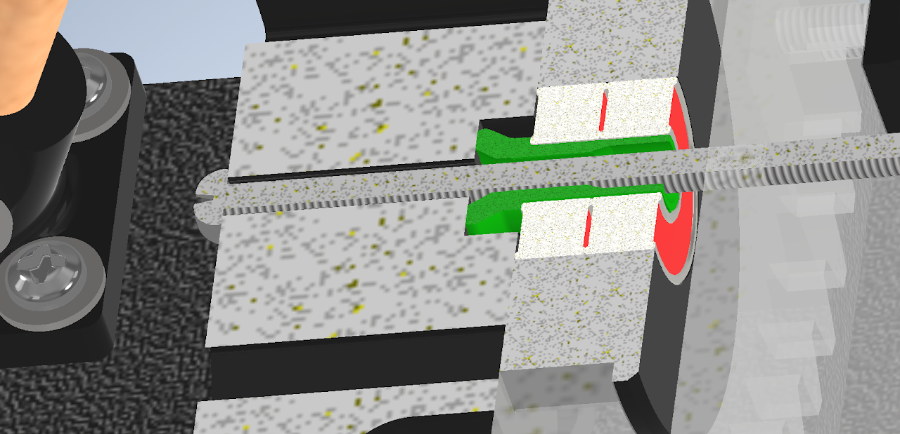
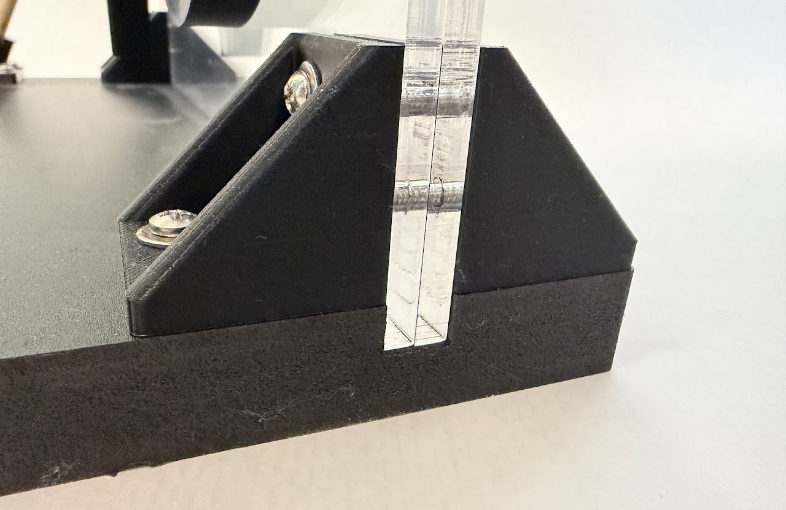
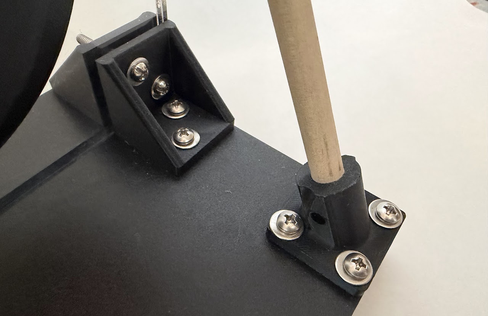
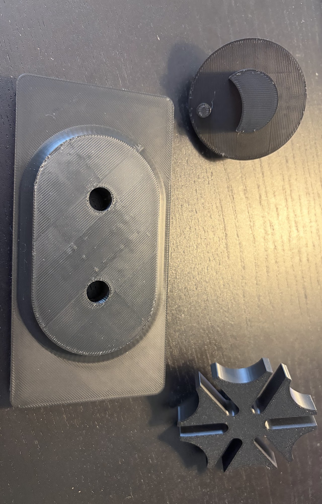
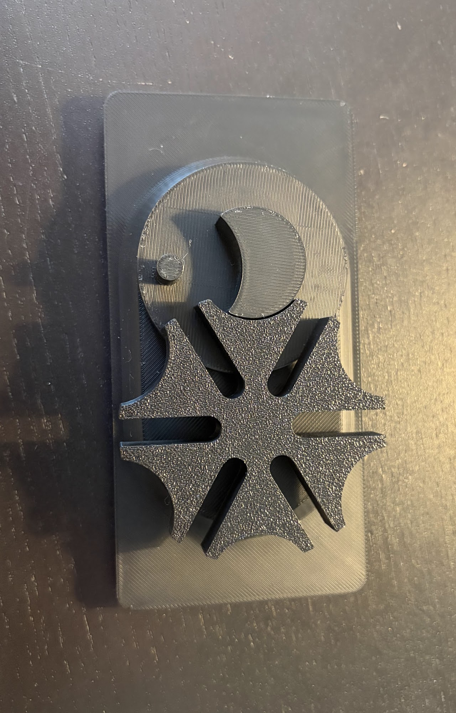

The "Geneva Mechanism" (or "Geneva Drive") is a mechanical system/mechanism that converts a constant rotational motion to a periodic rotational motion. It is my personal favorite mechanical system. As the name hints, it has applications and origins in watchmaking, with Geneva, Switzerland being the de facto capital of the watchmaking industry. It also has applications in film projecting, as it can be used in conjunction with a simple, constantly rotating motor to periodically turn a roll of film to project a new frame. This project was designed in Autodesk Inventor. This is a "6-slot Geneva Drive", meaning the output wheel (the star-shaped one) has 6 slots. This means for every 1 full turn of the input wheel (the crescent-shaped one), the output wheel will advance 1/6th of a full rotation. This ratio can be adjusted by changing the number of slots. The Geneva Drive is sometimes also called the "Maltese Cross Mechanism" for the output wheel's resemblance to the Maltese Cross symbol in "4-slot" Geneva Drive configurations. Another interesting thing about the Geneva Drive is that it is not reversible. Trying to operate the mechanism by turning the output wheel instead of the input wheel will cause the mechanism to lock, instead of turning the input shaft.


Any clear pieces shown were laser-cut out of 1/4" acrylic on a ULS PLS laser cutter. The two support posts are birch dowels that were cut down on a bandsaw. The base is made of Komatex (a type of PVC sheet material) that was cut and routed on a 3-axis CNC. All other parts were 3D-printed in PLA (BambuLab or Ultimaker) or pre-fab (hardware, bearings, etc.).


One issue I came across with this project was the fact that traditionally (in a watch mechanism, for example), Geneva Mechanisms are very well oiled/lubricated to prevent wear and allow the gears to function smoothly. This is impractical for a demonstrative project like this one as I wanted to be able to touch and interact with the parts and oil would drip down the horizontally mounted mechanism and create a mess. However, I did learn why lubrication is important with this mechanism as when I first used it (without lubrication), the mechanism would seize (especially at low speeds). I came to the conclusion that it was due to one of two factors:
- The bearing tree being too loose, so the wheel is just spinning in the tree, not with the bearing (creating friction)
- A lack of lubrication was causing the output wheel to rotate slightly out of alignment because of friction with the input wheel
- This would cause the peg on the input wheel to not properly align with the slot on the output wheel

This is a cross section of the wheel in the assembly. The bearing tree is the green part. If this part does not fit tightly, the wheel and bearing tree will spin inside hole of the bearing, without spinning the bearing itself.
The above video recreates the effect that this misalignment can have on seizing the mechanism.
I decided to tackle case #2 first as its solution was much easier to execute than case #1's (where I would have to adjust the design, and disassemble/reassemble the mechanism). I used a grease instead of oil, for the reasons mentioned earlier. I opted for a thin layer of Vaseline/petroleum jelly as it is skin-safe (so not a big issue if it gets on one's hands while using the mechanism) and pretty viscous, so it would not leak all over the frame of the machine. Thankfully, this solved the issue, so the lack of lubrication was the culprit.


One part of this project that is under looked, yet I found very interesting to design, was the frame of the machine. When designing it, I wanted to be very intentional about how it would join together and not just make a couple of brackets and call it a day. It was important that it was very solid so that the focus could be the motion of the mechanism, not any shaking or flexing of the frame. The acrylic back plate is comprised of two 1/4" sheets layered together for more rigidity. It slots into a groove in the Komatex base which prevent it from moving forward and backward). It is also attached with 3d-printed brackets to constrain it from vertical motion and from moving side to side. The two wooden dowels constrain the rotation. These 3 intentional supports result in the frame of the machine being extremely solid. I cannot get the frame to deform, creak, or bend even when applying significantly more force than it would ever experience under normal use.
Below is a simple three-part Geneva Mechanism that I designed and 3d-printed as a proof of concept/exercise for understanding the geometry before I started on the full-scale project.

